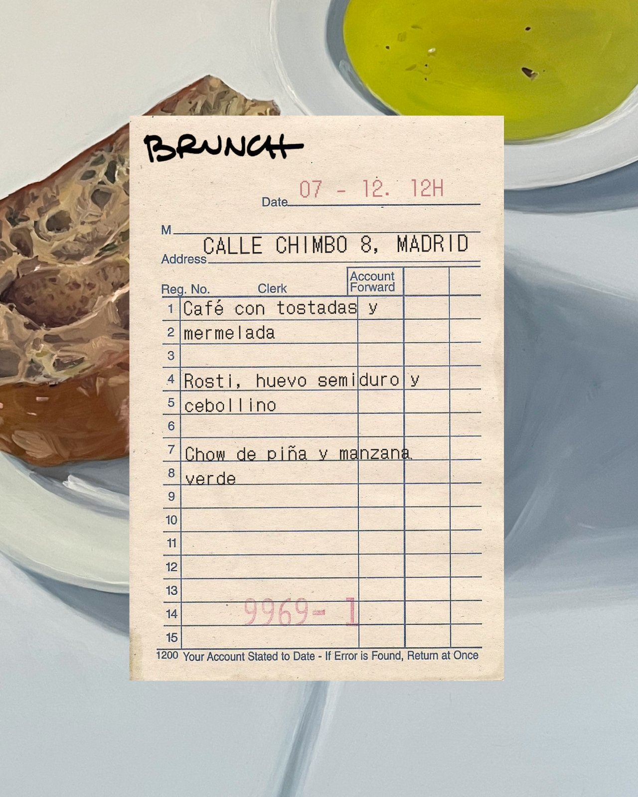
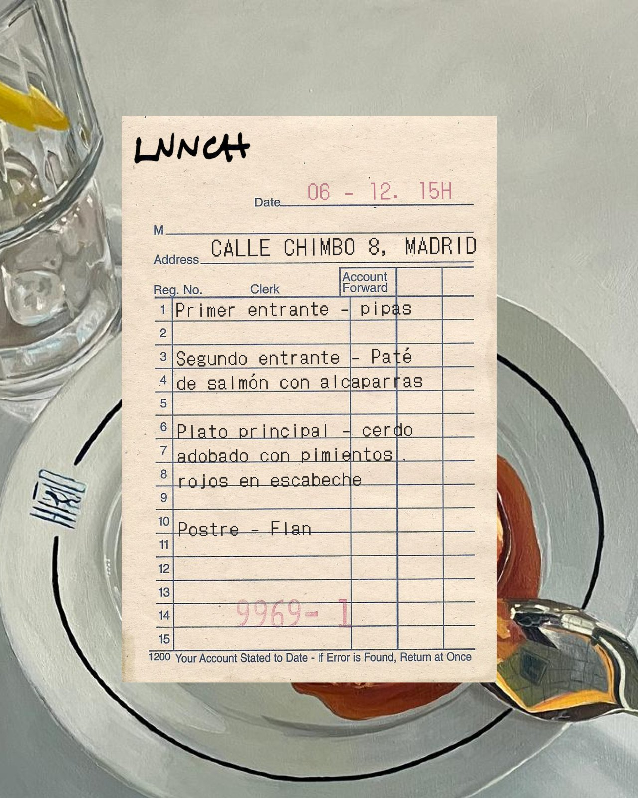
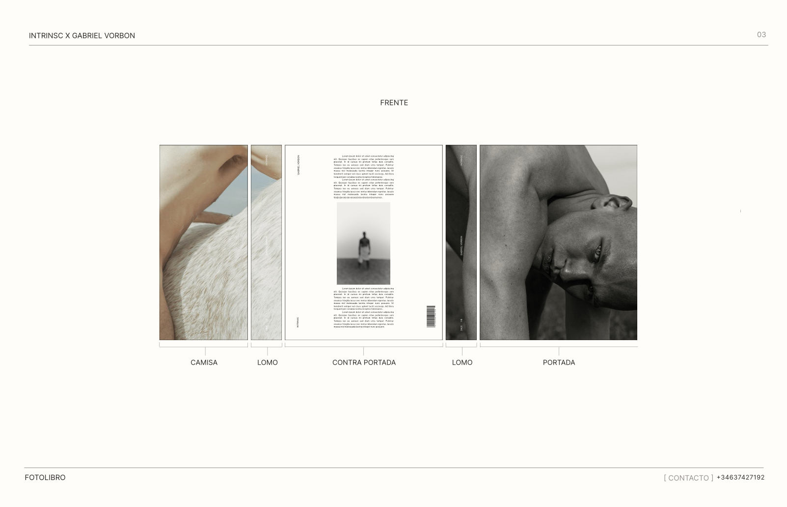
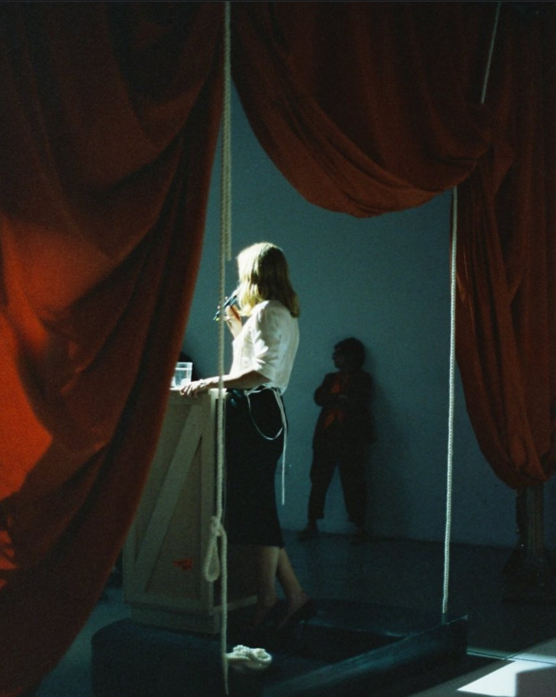
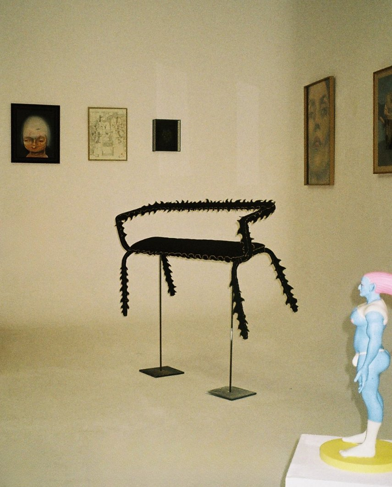
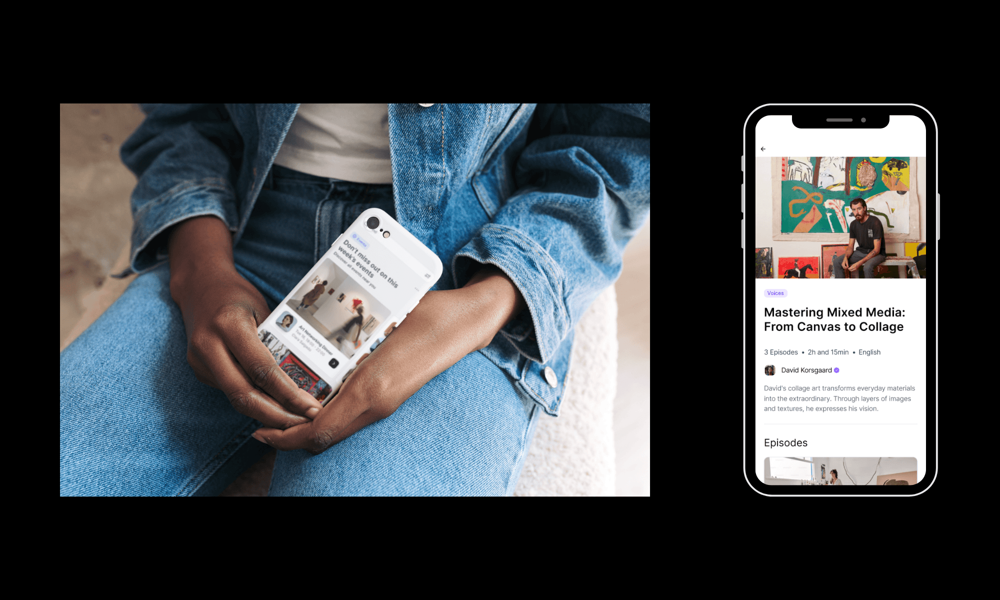

Intrinsc is a group of creatives who build individual artist brands through curation, cultural programming, and bespoke projects like publishing. As brand and curation lead, I built the brand system from the ground up and worked directly with artists to put their work in front of the audiences and professionals that could move their careers forward.
The Brief
Intrinsc had a real offering and was already gaining traction in Madrid's art community, but no one could explain in a single sentence what it actually was. Galleries, events, and publications were happening, but the through-line wasn't obvious. Messaging was inconsistent, the visual identity wasn't cohesive, and the value proposition needed translating.



Strategy + Positioning
We stopped looking for the perfect label and led with the value. The previous positioning, "shaping a new creative ecosystem for sustainable artistic careers," was abstract enough that everyone had follow-up questions. The new line:
We make artistic practice into a livelihood.
That sentence ended the follow-up questions. From there, every touchpoint was built around what Intrinsc actually delivers: autonomy, integrity, and cultural credibility. The same logic governed how the team collaborates internally and which institutional relationships Intrinsc pursues.
Voice and Messaging
The voice had to support creatives without competing with them, and present Intrinsc as a creative body in its own right without muddying the offer. I anchored it through a set of intentional tensions: knowledgeable but never academic, supportive but never hand-holding, visionary but never competing with the artist, accessible but never dumbed down, principled but never preachy.


Creative Strategy
I directed two graphic design interns on how to translate the brand identity into visual assets across social media, newsletters, gallery texts, and signage. The direction held four tensions: raw and refined, warmth through material rather than decoration, the artist as the focal point, and editorial over commercial.
Curation
I led the planning and execution of multiple artist projects under the Intrinsc banner: an exhibit at Madrid Design Festival, a successful auction for living artists in collaboration with Casabanchel, the text for a book with photographer Gabriel Vorbon (featured in Numéro and Vogue), and an exhibition for Uschi Henkles, a former marketing executive who pivoted into independent practice.

The Result
A defined brand identity and the strategic logic that comes with it. Decision-making sped up: which artists to pursue, which projects to take on, which partners to align with. The recognition followed.
With our community growing consistently locally, digital growth is becoming a realistic possibility. We consider digital expansion not as a separate channel, but as a continuation of the same sensibility. The mockups above show how Intrinsc's brand identity holds its integrity across contexts, whether on screen or in-person.
Featured in HighxTar, Tapas Magazine, Icon, and El País.